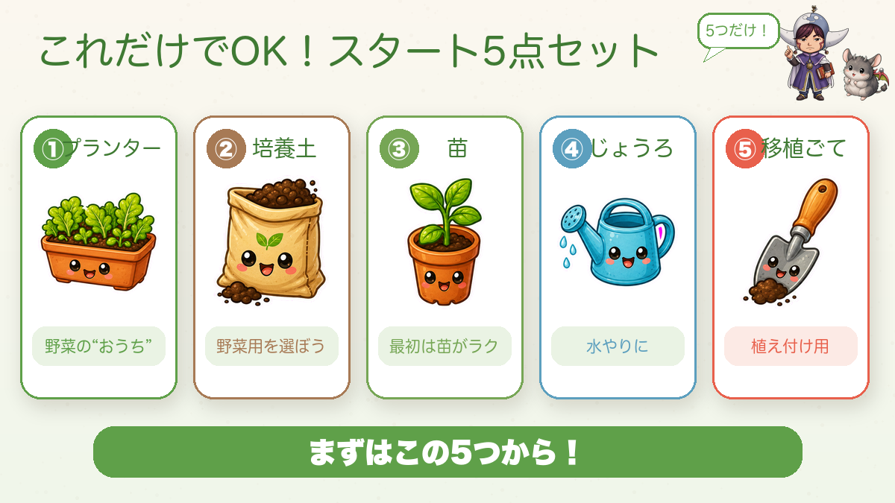
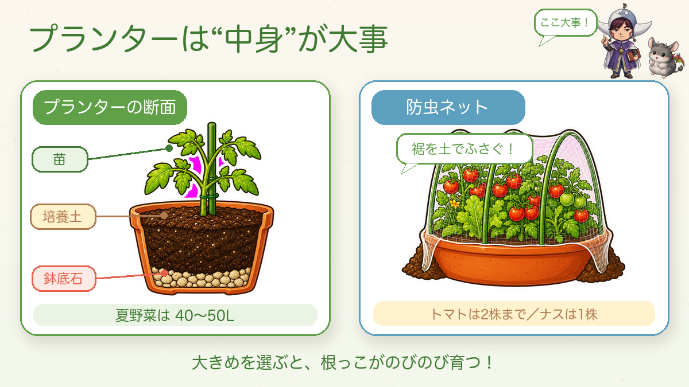

【保存版】最初に揃えるものリスト🌱 これだけでOK

🗨️「道具って、いっぱい揃えなあかんの？」
🗨️「お金、けっこうかかりそう…」
🗨️「結局、何を買えばいいのか分からん！」
どうも、8150（えいこう）です🌱 家庭菜園歴8年、有機・無農薬でやってる、野菜と理科が好きな人間です。
前回は「まず“どこでやるか”を決めよう」という話でした。場所が決まったら、次は道具ですよね。でも安心してください。最初に揃えるものは、ほんのちょっとだけ。この記事では、私が実際に使って「これは良かった」と思える道具を正直にお話しします☺️

これだけは揃えたい「5点セット」
まずはこの5つ。①プランター ②培養土 ③苗 ④じょうろ ⑤移植ごて。
プランターは大きめ・スリット入りがおすすめ（根がよく張る）。培養土は「野菜用」を選べば肥料入りで土づくり完了。私は無農薬なので、培養土も“有機”タイプにしてます。苗は園芸店で。じょうろや移植ごても、使いやすいものを選ぶと毎日の作業がぐっとラクになります。


↑この2つが土台。じょうろ・移植ごても下にまとめておきます。
- じょうろ 🔗リンク：じょうろ
- 移植ごて 🔗リンク：移植ごて
無農薬でいくなら「防虫ネット」だけは足してください
農薬を使わない私にとって、防虫ネットは一番の相棒。虫は「来てから」だと手遅れ。最初から物理的に入れないのが一番ラクで確実です。ポイントは裾を土でしっかりふさぐこと。

防虫ネットを「アーチ支柱」でトンネル状にかけ、裾をクリップで留める。これが基本セットです。


「あると便利」だけど後でOKな道具
いきなり全部いりません。慣れてきたら、で十分。鉢底石（スリット鉢なら不要）、収穫バサミ、庭・畑派には三角ホー（1本で草削り・土ならし・畝立て）が働き者です。
- 収穫バサミ 🔗リンク：収穫バサミ
- 鉢底石 🔗リンク：鉢底石
- 三角ホー 🔗リンク：三角ホー
土と肥料、ちょっとだけ大事な話
培養土に肥料は入ってますが、育つと追肥が必要に。ここで理科の先生としてひとつだけ。堆肥（牛ふん）＝土をフカフカにする役／肥料（鶏ふん・油かす）＝野菜のごはん。別物です。有機肥料は土の微生物が分解して初めて効くので、①一度にドバッと入れない ②植える直前に入れない（2〜3週間寝かせる） ③土に混ぜ込む。詳しい土づくりは次回みっちりやります☺️
道具は“使いやすいもの”を選ぶと、結局ラク
最初から高い道具を全部そろえる必要はありません。でも、すぐ壊れたり使いにくかったりすると、かえって面倒になって続かない…という人も多いんです。長く楽しむなら、使いやすくて丈夫なものを選ぶのが結局お得。上で紹介したのは、私が実際に使って「これは良かった」と思えたものだけ。気になるものから少しずつ揃えてみてください🌱
まとめ
- これだけは：プランター・培養土・苗・じょうろ・移植ごて
- 無農薬なら 防虫ネット一式を足す（裾を土でふさぐ）
- 道具は使いやすいものを、続けながら少しずつ足す
道具がそろえば、もう準備は半分終わったようなもん。あとは植えるだけ🌱